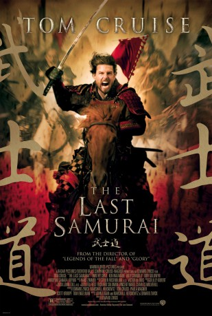

#159 Last Samurai
Alternativ: The Last Samurai
Auszeichnungen: für 4 Oscars nominiert
 
 IMDB-Wertung: 7.7 / 10
IMDB-Wertung: 7.7 / 10  Metascore: 55
Metascore: 55 
Der abgehalfterte US Militär Captain Nathan Algren nimmt im Jahr 1875 den Auftrag an, die Armee des japanischen Kaisers auszubilden. Er soll die Truppe auf den Kampf gegen die alten Krieger des japanischen Kaiserreichs vorbereiten: den Kampf gegen die Samurai. Doch bereits im ersten Gefecht werden die Soldaten vernichtend geschlagen und Algren wird gefangen genommen. Schwer verletzt wird er in das Dorf des Anführers der Samurai Katsumoto gebracht. Er wird gesund gepflegt und lernt im nächsten Haben Jahr die Lebensweise der Samurai kennen. Wieder zurück in Tokio muss er sich entscheiden auf welcher Seite er steht. Wird er mit den von Amerikaner geführten japanischen Soldaten kämpfen oder sich für die Seite der Samurai entscheiden?
Jahr: 2003
Dauer: 154 Minuten
FSK: 16
Land: USA Studio: Warner Bros.Tonspuren:
Untertitel: Deutsch, Englisch,
Auflösung: 1080p (1920×792) Größe: 11776 MB
Genre: Action, Drama, Geschichte, Krieg
Regisseur:  Edward Zwick
Edward Zwick
Drehbuch: John Logan, John Logan, Edward Zwick, Marshall Herskovitz
Soundtrack: Hans Zimmer
Darsteller:
 Ken Watanabe als Katsumoto
Ken Watanabe als Katsumoto Tom Cruise als Nathan Algren
Tom Cruise als Nathan Algren William Atherton als Winchester Rep
William Atherton als Winchester Rep Chad Lindberg als Winchester Rep Assistant
Chad Lindberg als Winchester Rep Assistant Billy Connolly als Zebulon Gant
Billy Connolly als Zebulon Gant Tony Goldwyn als Colonel Bagley
Tony Goldwyn als Colonel Bagley- Masato Harada als Omura
- Masashi Odate als Omura's Companion
 John Koyama als Omura's Bodyguard
John Koyama als Omura's Bodyguard Timothy Spall als Simon Graham
Timothy Spall als Simon Graham Togo Igawa als General Hasegawa
Togo Igawa als General Hasegawa- Shin Koyamada als Nobutada
 Hiroyuki Sanada als Ujio
Hiroyuki Sanada als Ujio- Koyuki als Taka
- Seizô Fukumoto als Silent Samurai
 Scott Wilson als Ambassador Swanbeck
Scott Wilson als Ambassador Swanbeck Yuki Matsuzaki als Soldier in Street #1
Yuki Matsuzaki als Soldier in Street #1- Hiroshi Watanabe als Guard
- Ray Godshall Sr. als Convention Hall Attendee
- Shichinosuke Nakamura als Emperor Meiji
- Satoshi Nikaido als N.C.O.
- Shintaro Wada als Young Recruit
- Shun Sugata als Nakao
- Sôsuke Ikematsu als Higen
- Aoi Minato als Magojiro
- Shoji Yoshihara als Sword Master
- Kosaburo Nomura IV als Kyogen Player #1
- Takashi Noguchi als Kyogen Player #2
- Noguchi Takayuki als Kyogen Player #3
- Sven Toorvald als Omura's Secretary
- Mitsuyuki Oishi als Soldier in Street #2
- Jiro Wada als Soldier in Street #3
- Yusuke Myochin als Sword Master's Assistant
- Hiroaki Amano als Samurai Ensemble
- Kenta Daibo als Samurai Ensemble
- Koji Fujii als Samurai Ensemble
- Makoto Hashiba als Samurai Ensemble
- Shimpei Horinouchi als Samurai Ensemble
- Takashi Kora als Samurai Ensemble
- Shane Kosugi als Samurai Ensemble
- Takeshi Maya als Samurai Ensemble
- Seiji Mori als Samurai Ensemble
- Lee Murayama als Samurai Ensemble
- Takeru Shimizu als Samurai Ensemble
- Shinji Suzuki als Samurai Ensemble
- Hisao Takeda als Samurai Ensemble
- Ryoichiro Yonekura als Samurai Ensemble
- Ryoichi Noguchi als Samurai Ensemble
- Darin Fujimori als Gatling Gun Operator , uncredited
Datei: X:\2003(G-M)\Last Samurai (2003, FSK16, 1920x792).mkv seit 13.02.2015
Festplatte: HD 2003-2004-2005(A-F)
 Es gibt insgesamt 33 Filme in der Gruppe '2003(G-M)'
Es gibt insgesamt 33 Filme in der Gruppe '2003(G-M)'